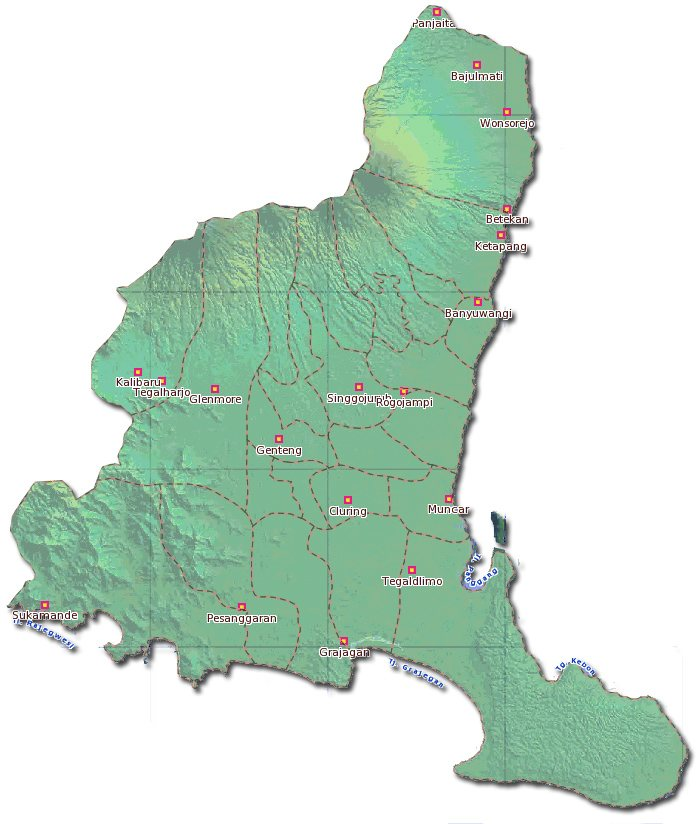
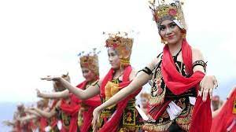

Geografi Banyuwangi terletak di daerah Jawa Timur.
Geografi Banyuwangi

Secara geografis, Kabupaten Banyuwangi terletak pada koordinat 7º45’15”–8º43’2” LS dan 113º38’10” BT.
Wilayah Kabupaten Banyuwangi cukup beragam, mulai dari dataran rendah hingga pegunungan. Kawasan
perbatasan dengan Kabupaten Bondowoso memiliki rangkaian Dataran Tinggi Ijen dengan puncaknya Gunung
Raung (3.282 m) dan Gunung Merapi (2.800 m) yang memiliki Kawah Ijen yang terkenal.
Bagian selatan terdapat perkebunan yang telah ada sejak zaman Hindia Belanda. Di perbatasan dengan
Kabupaten Jember bagian selatan, terdapat kawasan konservasi yang saat ini dilindungi sebagai cagar
alam, yaitu Taman Nasional Meru Betiri. Pantai Sukamade merupakan kawasan penangkaran penyu. Di
Semenanjung Blambangan juga terdapat cagar alam, yaitu Taman Nasional Alas Purwo.
Julukan

- The Sunrise of Java: Julukan "The Sunrise of Java" diberikan kepada Kabupaten Banyuwangi karena daerah
ini adalah salah satu yang pertama menerima sinar matahari terbit di Pulau Jawa.
- Bumi Blambangan: Julukan "Bumi Blambangan" mengacu pada sejarah kerajaan Blambangan yang merupakan
asal-usul Banyuwangi. Blambangan adalah kerajaan yang gigih bertahan melawan penjajah Belanda dan
merupakan cikal bakal Banyuwangi.
- Osing: Penduduk asli Banyuwangi dikenal sebagai "Osing" dan memiliki budaya yang sedikit berbeda dari
masyarakat Jawa umumnya.
- Santet: Julukan "Santet" terkait dengan peristiwa tragis "Tragedi Santet" pada tahun 1998 di mana
lebih dari 100 orang dituduh memiliki ilmu santet dan dibunuh secara misterius.